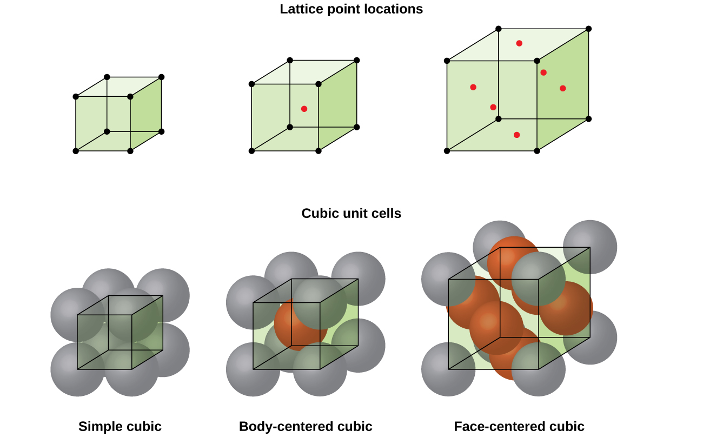
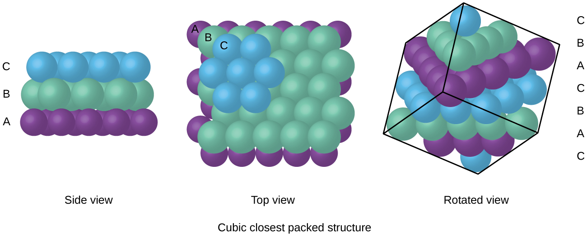
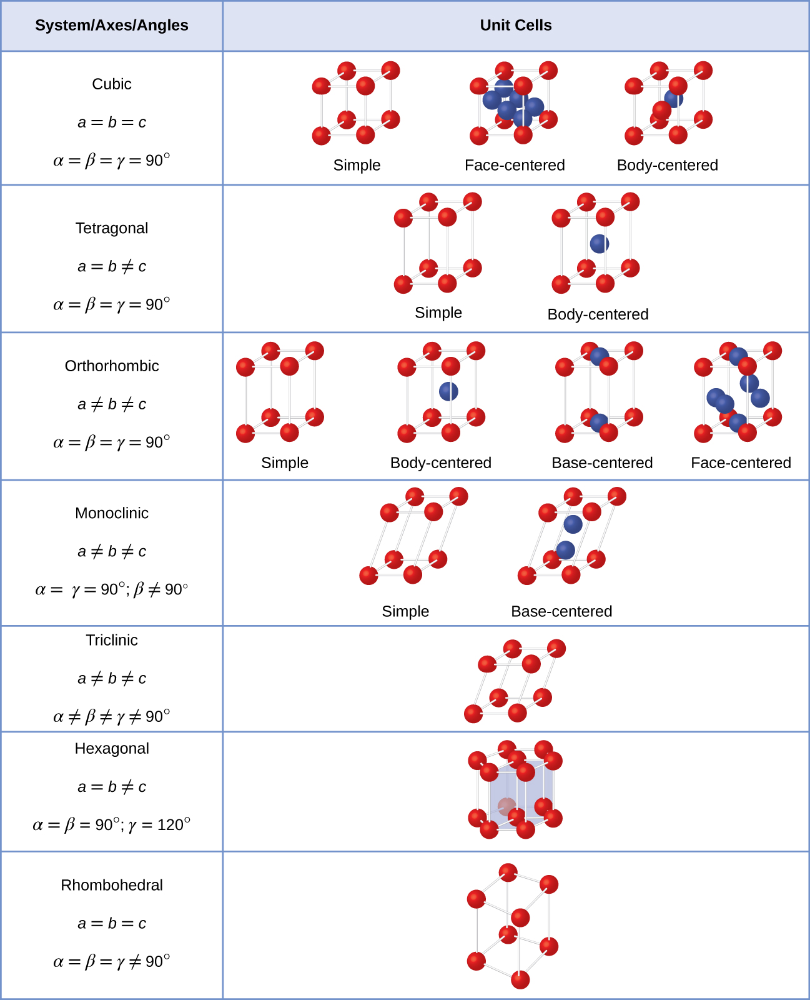

Learning goals
- Recognize simple, body-centered, and face-centered cubic cells.
- Interpret close packing and layer sequences.
- Connect lattice system to unit cell parameters.
Key visuals

Simple, body-centered, and face-centered cubic cells.

Cubic close packing and ABC stacking.

Lattice systems and unit cell parameters.
Micro-demo: unit cell counting
Simple cubic: 1 atom per unit cell.
Body-centered: 2 atoms per unit cell.
Face-centered: 4 atoms per unit cell.
Interactive: lattice selector
Coordination number 6, packing efficiency 52%.
Exit check
Identify the lattice and number of atoms per cell for NaCl.